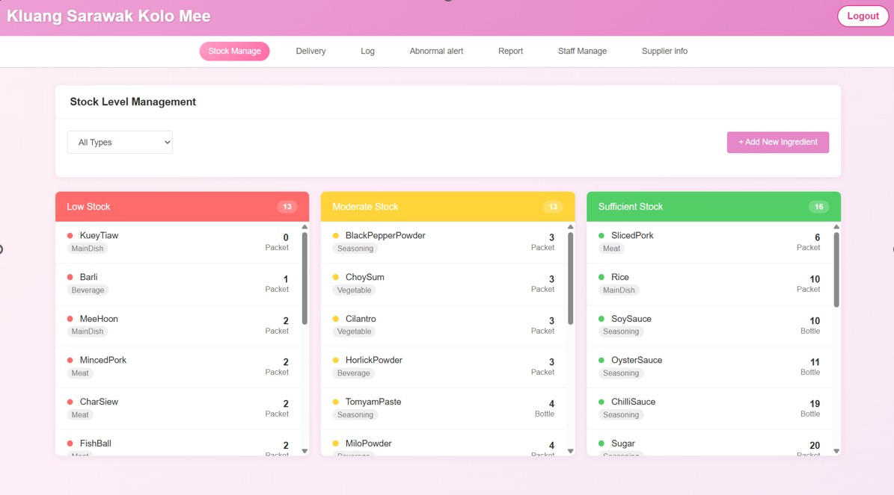
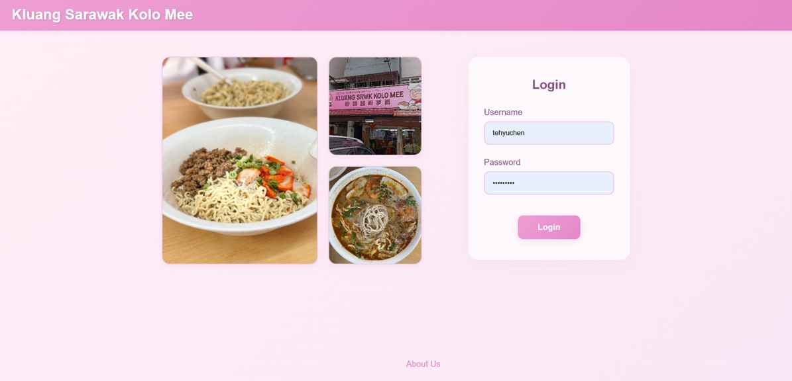
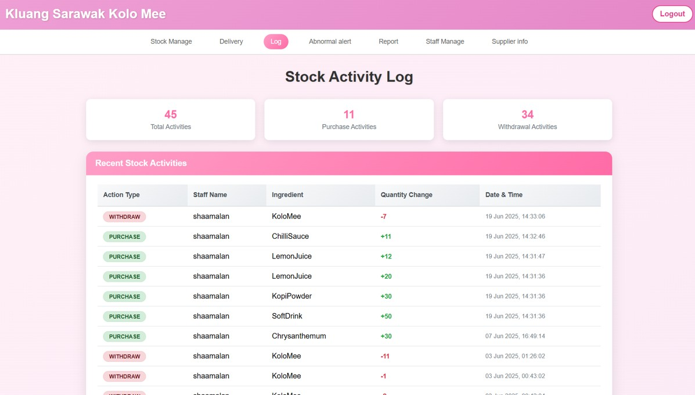
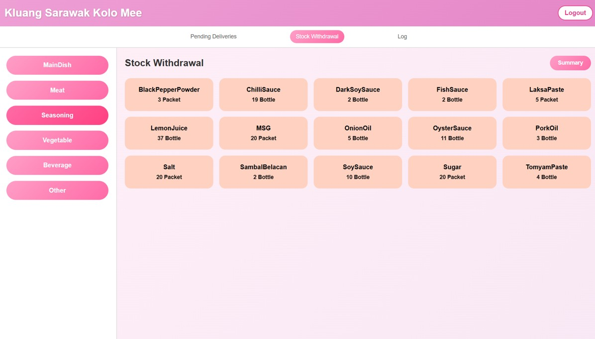

Web Application
A real-time inventory and supplier management web application tailored for Kluang Sarawak Kolo Mee.
The existing inventory management at Kluang Sarawak Kolo Mee was entirely manual, relying on daily hand-written records which increased the risk of human error and data loss. This stock management system was developed to completely automate the process of tracking stock levels, generating analytical reports, and logging usage data in real-time. By replacing manual tracking, it helps reduce the risk of overstocking, minimizes food waste, and prevents service disruptions.



